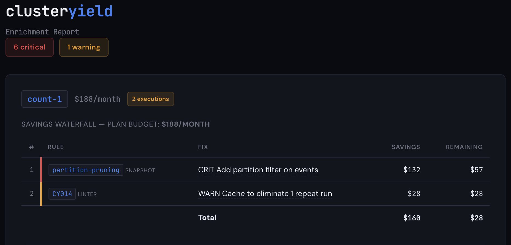
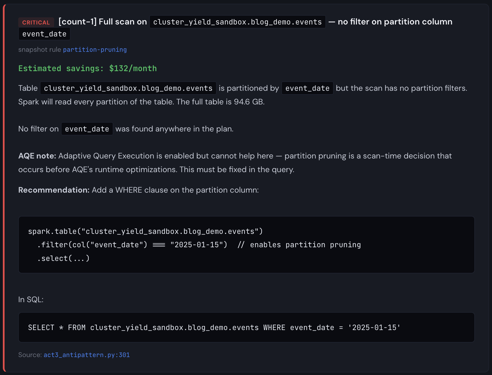
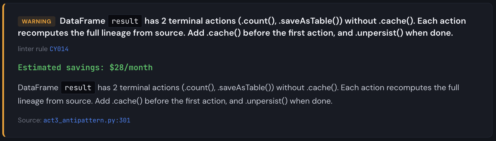
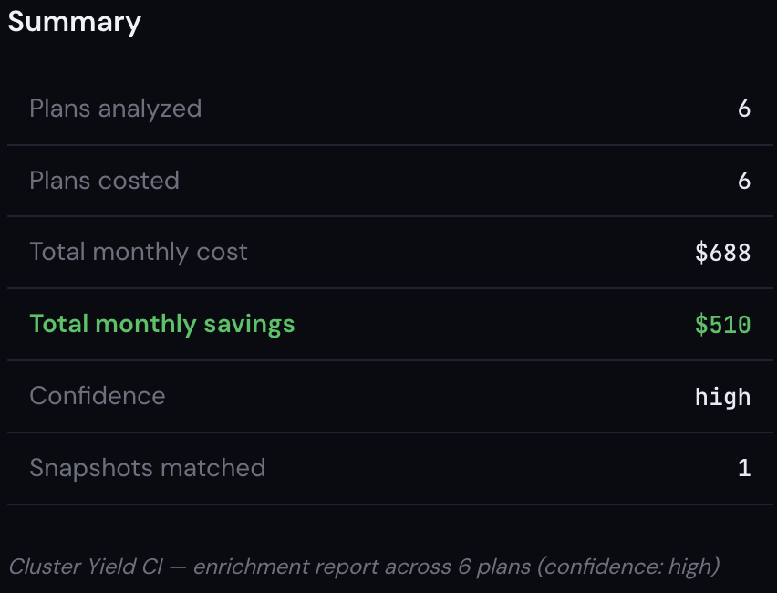

We Linted 5,046 PySpark Projects on GitHub. Here's What Static Analysis Can and Can't Tell You.
I know what you're thinking… "Dear God not another linter". And honestly, the sentiment is understandable. How many of us want to bother installing yet another tool into our already cluttered workflows? How many rules am I going to have to disable THIS time, just to get a clean CI build again? And that is a totally fair position to take. I've been there. But after spending some time working on production PySpark systems that cost hundreds of thousands of dollars per month to run (and nobody bats an eye), it really got me thinking. How much of that spend is actually unneccessary?
Knowing I didn't have the full picture got me curious about whether this is something that can be solved. How prevalent is compute/shuffle/scan waste across the industry? How much money can be saved if those problems are fixed? Is monetary waste a problem that static analysis on its own can handle, and if not, why not? These are questions that I feel are worth asking and digging into because I believe that static analysis has its place in Data Engineering workflows and that it is possible to quantify, with dollars and cents, many of these wasteful spends within the comfort of the engineering dev cycle. What if, at code review time, you could see exactly how much a code change would cost in production, before it ever gets deployed?
First, Here's What Our Static Analysis Found
I scraped 5,046 PySpark repos from GitHub, organized them into tiers based on code maturity, and scanned the repos for anti-patterns. The maturity of a repo was expressed as:
# Tier 4 — Production-Adjacent
if (stars > 200 and is_org
and (has_deploy or contribs > 10 or commits > 500)):
return 4
# Tier 3 — Serious Projects
if ((stars > 50 or contribs > 3)
and (has_ci or has_tests or has_pkg)):
return 3
# Tier 2 — Personal Projects
if stars >= 5 or contribs >= 2 or commits >= 10:
return 2
# Tier 1 — Learning/Hobby
return 1(You can see the full scan harness code at github.com/clusteryieldanalytics/scan-harness)
The linter itself is open source at github.com/clusteryieldanalytics/cylint. A full discussion of all of these anti-patterns is enough for a follow-up blog post on its own, so I'll defer that for now and instead focus on what I found, and how it relates to the questions I asked earlier. If you're interested, you can find the analysis reference for all the static rules I used at clusteryield.app/analysis-reference. And if you're curious about how your own codebase hygiene stacks up, I encourage you to pip install cylint && cy lint src/. Let me know what you find! PRs are always welcome.
Anyway, here's how the corpus looks overall:
| Tier 1 — Learning | Tier 2 — Personal | Tier 3 — Serious | Tier 4 — Prod-adj | |
|---|---|---|---|---|
| Repos | 1,882 | 2,574 | 473 | 96 |
| PySpark files | 24,563 | 42,198 | 19,457 | 1,873 |
| Findings/file | 1.44 | 1.47 | 0.61 | 0.33 |
Okay, so more experienced engineers definitely write cleaner code overall. Hooray! Tell me something I don't know, right? Well, it gets a bit more interesting when I break it down by finding. The data splits into two categories: patterns that decline with maturity, and patterns that persist (or concentrate) in production code.
| Rule | Description | T1 | T4 | Ratio |
|---|---|---|---|---|
| CY018 | schema inference (.read without .schema) | 45.6% | 17.7% | 0.39 |
| CY031 | iterating over .collect() | 12.1% | 4.2% | 0.35 |
| CY012 | .show() left in | 38.0% | 11.5% | 0.30 |
| CY015 | non-equi join | 2.8% | 1.0% | 0.36 |
| CY010 | join without explicit how | 12.4% | 5.2% | 0.42 |
| CY005 | single-use .cache() | 2.1% | 1.0% | 0.48 |
| CY001 | .collect() unfiltered | 14.5% | 7.3% | 0.50 |
| CY013 | .coalesce(1) | 9.7% | 5.2% | 0.54 |
| CY006 | .toPandas() unfiltered | 10.6% | 6.2% | 0.58 |
| CY009 | UDF in .filter() | 1.6% | 1.0% | 0.62 |
These are the antipatterns that experienced engineers are good at avoiding. I won't spend much time going deep into this data… Most of these antipatterns are obvious and easy to avoid. A full deep-dive into each of them will be covered in a future blog post. But what's much more immediately interesting is what I noticed about the rest of the findings. I certainly didn't expect certain antipatterns to concentrate in production-quality code:
| Rule | Description | T1 | T4 | Ratio | Trend |
|---|---|---|---|---|---|
| CY007 | cross join | 5.3% | 9.4% | 1.77 | ▲ more prevalent |
| CY008 | .repartition() before write | 3.6% | 6.2% | 1.72 | ▲ more prevalent |
| CY003 | .withColumn() in loop | 17.1% | 28.1% | 1.64 | ▲ more prevalent |
| CY011 | .withColumnRenamed() loop | 2.9% | 4.2% | 1.45 | ▲ more prevalent |
| CY025 | .cache() without .unpersist | 19.3% | 24.0% | 1.24 | ▲ more prevalent |
| CY017 | window without .partitionBy | 7.1% | 8.3% | 1.17 | ▲ more prevalent |
| CY002 | UDF w/ builtin exists | 4.9% | 4.2% | 0.86 | — flat |
| CY020 | .count() for emptiness check | 3.8% | 3.1% | 0.82 | — flat |
| CY014 | repeated actions w/o cache | 28.4% | 20.8% | 0.73 | — flat |
| CY004 | SELECT * | 11.9% | 8.3% | 0.70 | — flat |
Interesting! Six patterns are more prevalent in production code than in hobby code. After seeing this my first instinct was to assume I had false positives, so I made extra sure that the linter rules were correct (and this data in fact took several tries to get right). And so the question becomes, what does this data tell us?
The answer is not straightforward. I spot checked all of these findings, and verified that all of the findings are legitimate instances. What I realized while doing this, however, is that many of the antipatterns I caught in production-adjacent code were intentional.
First, CY007 (cross join). These joins are mostly intentional because mature projects use them deliberately for broadcasting small aggregates or generating candidate pairs. This explains the 1.77x ratio (T4 vs T1): beginners rarely need cross joins, while production recommender systems and feature engineering pipelines do. But what a code review will never tell you is whether those tables are silently growing over time, building up to a performance alert, or worse, a job outage. And this is the line of thinking that led me naturally to start rubbing up against the limits of what standard static analysis can give us.
Similarly, for CY017 (window without partitionBy), my spot check revealed that in T4 repos these were all intentional. Developers knowingly use Window.orderBy() without partitionBy() because they genuinely need global ordering (sequential IDs, running totals, lag comparisons). However, the warning is still valid: this forces all data through a single partition, which is a scalability bottleneck.
One legitimate finding that surprised me is CY025 (.cache() without .unpersist()). Some of the examples in the corpus are borderline due to the .unpersist() happening in a different function's scope, but the majority of them in T3/T4 repos are legit memory leaks. The invisible cost here manifests as memory pressure on the executors leaving less room for shuffling.
And so where does that leave us? Well, it leaves us with the realization that static analysis alone is not going to do a good job predicting problems that are going to cost us money, because we can't always flag an anti-pattern as "universally bad". An antipattern may be intentional because it is the only way of doing something code-wise, and only when an unpredictable state change in config, cluster, plan, or catalog happens, does it turn into a legitimately costly issue. So if we ever want to proactively prevent catastrophic waste in production, we need to either a) prohibit antipatterns altogether and handicap ourselves, or b) commit to spending time and developer effort doing due diligence on each pipeline and table involved to convince ourselves they're never going to change unexpectedly in the future, then verify that with robust monitoring in production. We all know how that goes. But what if there's something else we can do?
What This Post Is Really About
The data tells a story many of us already expected. Code-level anti-patterns are prevalent across the spectrum of sophistication and aren't always unintentional. The data tells us these patterns are prevalent across tiers, including production code. What the data can't tell us is whether they matter because "does this matter?" depends on information that isn't in the source code.
Static analysis has inherent limitations that won't completely solve the problem of Spark performance tuning because engineers need to weigh Spark pipeline decisions using all available signals:
- Static analysis sees the code.
- The catalog knows the table sizes.
- The optimizer chose the plan.
- The config shaped the optimizer's choices.
- The cost dashboard or systems tables have the cost data.
These signals all matter, and they all inform the decisions engineers need to make. But the truth is it's easy to miss one or more signals at code review / job creation time because engineering time is valuable and there is an opportunity cost associated with gathering all the relevant data for every potentially costly change. It's not always worth investing the time in quantifying whether a code change will slow things down or cost more, and so what happens is an engineer will iterate until the performance looks "good enough". To quote a colleague:
"If I have a choice between getting a developer to investigate why our database is slow, or getting them to build another feature, I'll pick the feature every time. We'll just pay to increase the size of the db."
I admit that I myself have taken the easy road and resized a cluster when a deeper dive could have fixed the underlying issue. Not something I'm proud of, but when there are 12 more Airflow DAGs that you need to build, you fix the problem quickly and move on.
Right, let's get back to static analysis and where it falls short. As we just surmised, dear reader, there is a whole class of problems that are invisible to a code linter by definition, and many antipatterns are intentional. So does that mean it's a dead end? Well, not really, no. It just means we need to find creative ways to use the data that is available about our Spark jobs so that we can answer two important questions:
- Does this antipattern actually cost money?
- What am I missing?
Filling In The Gaps
In order to find out, we need to enrich static analysis with some of that sweet runtime data, which requires a little hacking. The first thing we need is a way to pull data off a running cluster. We need execution plans, catalog stats, spark config, and ideally, runtime metrics. We also need a good way to map source code locations from a running Databricks notebook. Most of that info can be exfiltrated thanks to a library I created here: cluster-yield-snapshot. The Databricks notebook I used for this demo is located in the examples folder.
# Pipeline 1 — fiscal period rollup
events = spark.table("blog_demo.events")
result = (
events
.filter(F.col("amount") > 0)
.groupBy("user_id", "category", "event_type")
.agg(
F.count("*").alias("event_count"),
F.sum("amount").alias("total_amount"),
F.avg("duration_sec").alias("avg_duration"),
F.max("event_date").alias("last_event_date"),
)
)
# Data quality check — how many users had events this period?
row_count = result.count()
print(f"Fiscal period rollup: {row_count:,} user-category groups")
# Write the rollup
result.write.mode("overwrite").saveAsTable("blog_demo.fiscal_events")# Pipeline 2 — high-value event summary
events = spark.table("blog_demo.events")
high_value = (
events
.filter(F.col("amount") > 100)
.groupBy("category", "event_type")
.agg(
F.sum("amount").alias("total"),
F.count("*").alias("cnt"),
)
)
high_value.write.mode("overwrite").saveAsTable("blog_demo.high_value_summary")# Pipeline 3 — three outputs from the same base DataFrame
events = spark.table("blog_demo.events")
high_value_events = (
events
.filter(F.col("amount") > 100)
.filter(F.col("is_converted") == True)
)
daily = (
high_value_events
.groupBy("event_date", "event_type")
.agg(F.sum("amount").alias("total"), F.count("*").alias("cnt"))
)
daily.write.mode("overwrite").saveAsTable("blog_demo.converted_daily")
by_channel = (
high_value_events
.groupBy("utm_source", "utm_medium")
.agg(
F.sum("amount").alias("revenue"),
F.countDistinct("user_id").alias("unique_users"),
)
)
by_channel.write.mode("overwrite").saveAsTable("blog_demo.converted_channels")
quality = (
high_value_events
.agg(
F.count("*").alias("total_rows"),
F.countDistinct("user_id").alias("unique_users"),
F.avg("amount").alias("avg_amount"),
)
)
quality.write.mode("overwrite").saveAsTable("blog_demo.converted_quality")Upon first glance, the code in the demo notebook looks benign. Read some data, do some aggregations, write some results. But it contains two very subtle problems that become very wasteful at large scale.
Now, when I run the linter on this code I get a single finding:
Cool, easy enough to fix. But when I enrich this with metadata from the snapshot, I get a much different picture. Let's assume that this job is already running in production and it takes 1.5 hours on a 16 node i3.2xlarge cluster. Not outside the realm of possibility by any stretch. Here's what you'd see:




Aha! So we're missing a partition filter and Catalyst can't prune partitions. This is a pitfall that basic linting will never catch because it has no information about table structure, plan optimizations, or table size. At a larger scale (multiple TBs), the fact that we are scanning the full table six times starts to matter. From the report, we see the partition pruning detector firing on 5 write actions, plus a missing .cache(), each of the partition pruning findings are critical, and the missing .cache() is a warning. This is narrow, but it gets the point across that code reviews and static analysis alone aren't enough.
The linter saw one problem. The snapshot saw six. One tool found a missing .cache(). The other found that every scan in the pipeline was reading 365 partitions when it needed 30. Together, they identified $510/month in waste on a $688/month job. That's 74% of the total cost, hiding in a pipeline that passed code review, ran successfully every day, and never triggered an alert.
That's the gap this post is about. Not "here are some anti-patterns you should avoid." You already know those. The gap isn't in any one tool. Good linters exist. Good monitoring exists. Good cost dashboards exist. The gap is that nobody connects them, and the right time to connect them is during code review, not after the bill arrives. That's what I'm trying to build.
Important note about costing: the demo events table I used during the snapshot run was 100GB and the full job run (excluding data seeding) took about 3 minutes on a 4 node i3.2xlarge cluster. If I were significantly richer than I am, I would consider scaling this up to several TB to measure the time taken. But honestly, I don't really need to do that to demonstrate the concept. Partially because we've all seen jobs that take 90 minutes on 16 node clusters before, but mainly because it's easy to simulate what would happen to the cost simply by using different run times, cluster configurations, instance types, and DBU rates. So while the demo table is 100GB, the findings are the same at any scale; only the dollar amounts change. At 1TB running daily, the same partition pruning miss costs 10× more. The plan doesn't care how big the table is; it either prunes or it doesn't.
And so that's what you see above. I am showing you what this job WOULD cost if it took 90 minutes on a 16 node i3.2xlarge cluster. The key insight is that total cost is a function of time taken and cluster size, and the cost distribution is a function of the executed Spark plan and the data volume. It's true that time taken is also dependent on data volume of course, but it's much easier to do top-down cost distribution from a known quantity than it is to predict overall job duration based on data volume and Spark plan. Maybe at some point that is a future problem I can look at in order to tune our cost model, but in the majority of cases, people already know what their jobs cost, they just don't necessarily know if that number is higher than it needs to be. Our example shows total savings of $510/mo from a $688/mo job. That's definitely worth fixing.
Worth pointing out also is that the CY014 finding from the linter is now quantified with a savings cost in the cost waterfall. Since the extra action runs the same plan twice, it's half the remaining savings after all the other cost reduction steps are applied.
Now you might be thinking: doesn't Adaptive Query Execution (AQE) already handle tuning my workloads for me? What about Dynamic Partition Pruning (DPP)? And yes, both of those things help a LOT. You should absolutely have them enabled. (You do have them enabled, right?) But they're solving a different part of the problem. AQE optimizes how your plan executes: it can promote a join to broadcast at runtime, coalesce small partitions, and handle data skew. DPP optimizes what gets scanned: it can propagate a filter through a join so Spark prunes partitions it wouldn't otherwise know to skip. Both are great at working with what the optimizer can infer from your query's structure. What neither can do is compensate for information that just isn't there. If your code scans a 365-partition table without any filter path to the partition column, no runtime optimization is going to invent that filter for you. If your pipeline writes three output tables from an uncached DataFrame, no optimizer is going to cache the computed result on your behalf. The full lineage re-executes for each action. Those are engineering decisions involving pipeline architecture and code, not optimizer decisions.
I've shown you why attacking the problem from all three sides is important. Neither code analysis nor runtime optimization/snapshot inspection nor cost dashboards on their own give you complete information, but putting them together allows us to enrich static analysis findings at PR time to provide valuable, actionable insights to you before you merge your code. Your code, your plans, and your costs live in three different tools owned by three different teams, and the interesting problems live in the intersection. We simply require fresh snapshot data, reliable cost information, and CI integration, and now we can annotate pull requests with deep impact analysis. By combining snapshot findings with linter findings, and mapping actual quantified cost impact directly to source code, we are able to tell you what your code could actually cost, and prevent it from costing more than it needs to. It's about more than just what patterns it contains.
The linter is free: pip install cylint
The snapshot library is open source!
Want to see what the enriched analysis looks like on your own pipelines?
Click Get started above and send me an email.